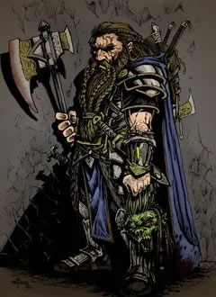

Reinos ricos de antiga grandeza, salões esculpidos nas raízes das montanhas, o eco de picaretas e martelos nas minas profundas e nas forjas ardentes, um compromisso com o clã e a tradição, e um ódio impetuoso contra goblins e orcs – essas linhas comuns unem todos os anões.
Audazes e resistentes, os anões são conhecidos como hábeis guerreiros, mineradores e trabalhadores em pedra e metal. Embora tenham menos de 1,50 metro de altura, os anões são tão largos e compactos que podem pesar tanto quanto um humano 60 centímetros mais alto. Sua coragem e resistência compete facilmente com qualquer povo mais alto. A pele dos anões varia do marrom escuro a um matiz mais pálido, tingido de vermelho, mas os tons mais comuns são o castanho claro ou bronzeado, como certos tons terrosos. O cabelo é longo, mas de estilo simples, geralmente negro, cinzento ou castanho, embora anões mais pálidos frequentemente possuem cabelos ruivos. Anões machos valorizam altamente suas barbas e preparam-nas com cuidado.
O nome de um anão é concedido pelo ancião de um clã, de acordo com a tradição. Todos os nomes próprios anões têm sido utilizados e reutilizados através de gerações. O nome de um anão pertence ao clã, não ao indivíduo. Um anão que o usar indevidamente ou trouxer vergonha ao clã tem seu nome retirado e está proibido por lei de usar qualquer outro nome anão em seu lugar.
Nomes masculinos: Adrik, Alberich, Baern, Barendd, Brottor, Bruenor, Dain, Darrak, Delg, Eberk, Einkil, Fargrim, Flint, Gardain, Harbek, Kildrak, Morgran, Orsik, Oskar, Rangrim, Rurik, Taklinn, Thoradin, Thorin, Tordek, Traubon, Travok, Ulfgar, Veit, Vondal.Seu valor de Constituição aumenta em 2.
Anões tornam-se maduros na mesma proporção que os humanos, mas são considerados jovens até atingirem a idade de 50 anos. Em média, eles vivem 350 anos.
A maioria dos anões é leal, pois acreditam firmemente nos benefícios de uma sociedade bem organizada. Eles tendem para o bem, com um forte senso de honestidade e uma crença de que todos merecem compartilhar os benefícios de uma ordem social justa.
Anões estão entre 1,20 e 1,50 metro de altura e pesam cerca de 75 kg. Seu tamanho é Médio.
Seu deslocamento base de caminhada é de 7,5 metros. Seu deslocamento não é reduzido quando estiver usando armadura pesada.
Acostumado à vida subterrânea, você tem uma visão superior no escuro e na penumbra. Você enxerga na penumbra a até 18 metros como se fosse luz plena, e no escuro como se fosse na penumbra. Você não pode discernir cores no escuro, apenas tons de cinza.
Você possui vantagem em testes de resistência contra venenos e resistência contra dano de veneno
Sempre que você realizar um teste de Inteligência (História) relacionado à origem de um trabalho em pedra, você é considerado proficiente na perícia História e adiciona o dobro do seu bônus de proficiência ao teste, ao invés do seu bônus de proficiência normal.
Existem duas sub-raças principais de anões nos mundos de D&D: anões da colina e anões da montanha. Você deve escolher uma dessas sub-raças.
Como um anão da colina, você tem sentidos aguçados, maior intuição e notável resiliência. Os anões dourados de Faerûn, que vivem em seu poderoso reino ao sul do continente, são anões da colina, assim como os exilados Neidar e os depreciáveis Klar de Krynn, no cenário de Dragonlance.
Aumento no valor de habilidade. Seu valor de Sabedoria aumenta em 1.Como um anão da montanha, você é forte e resistente, acostumados a uma vida difícil em terrenos difíceis. Você, provavelmente tem a descendência daqueles mais altos (para um anão) e tende a possuir uma coloração mais clara. Os anões do escudo do norte de Faerûn, bem como o clã governante Hylar e os clãs nobres Daewar de Dragonlance, são anões da montanha.
Aumento no valor de habilidade. Seu valor de Força aumenta em 2. |
|||
|---|---|---|---|
| Anão da colina | Anão da montanha |
Você tem proficiência com machados de batalha, machadinhas, martelos leves e martelos de guerra.
Você tem proficiência em uma ferramenta de artesão à sua escolha entre: ferramentas de ferreiro, suprimentos de cervejeiro ou ferramentas de pedreiro.
Você pode falar, ler e escrever Comum e Anão. O idioma Anão é repleto de consoantes duras e sons guturais, e essa característica influencia, como um sotaque, qualquer outro idioma que o anão falar.